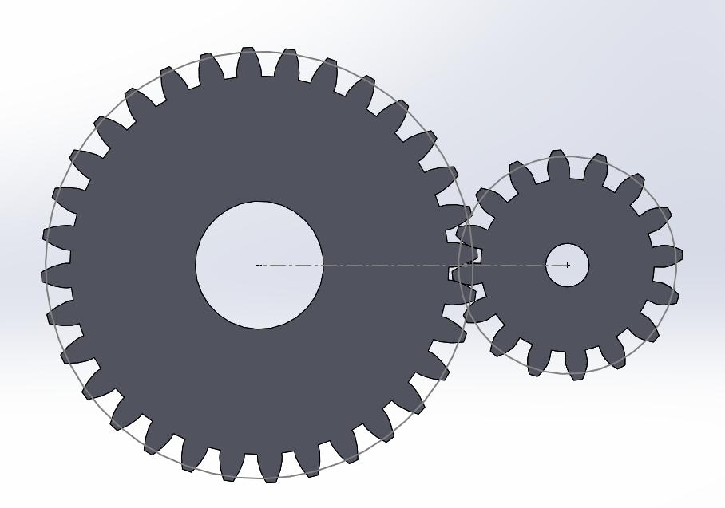
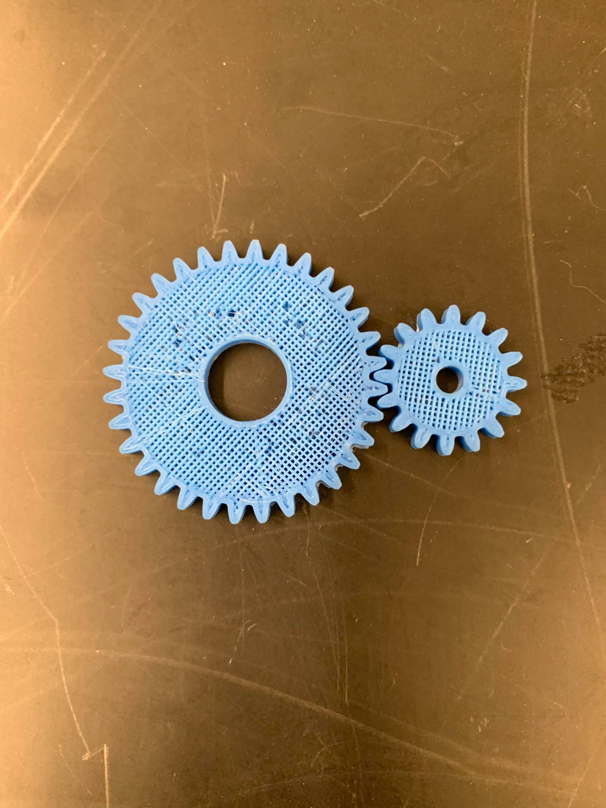
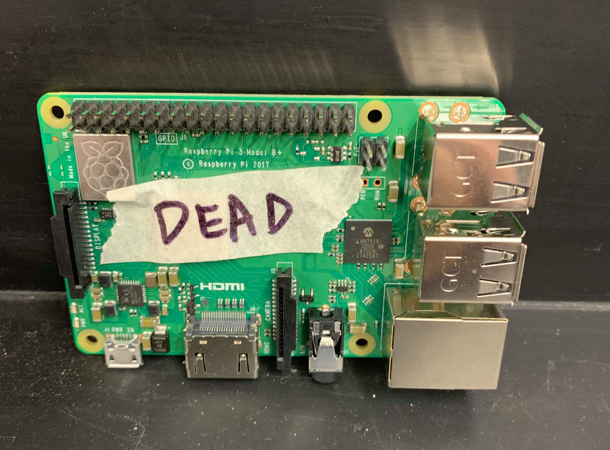
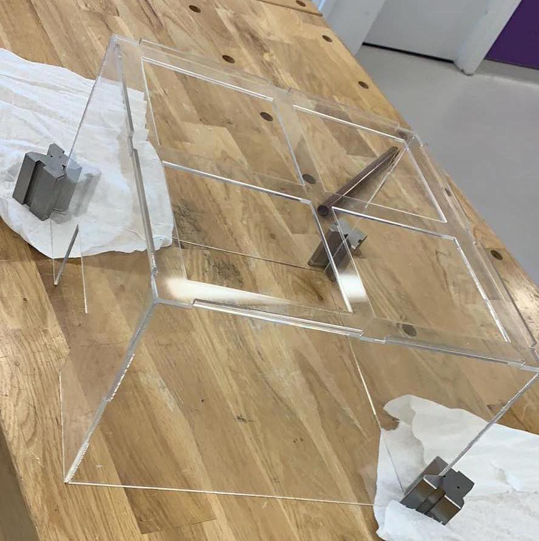
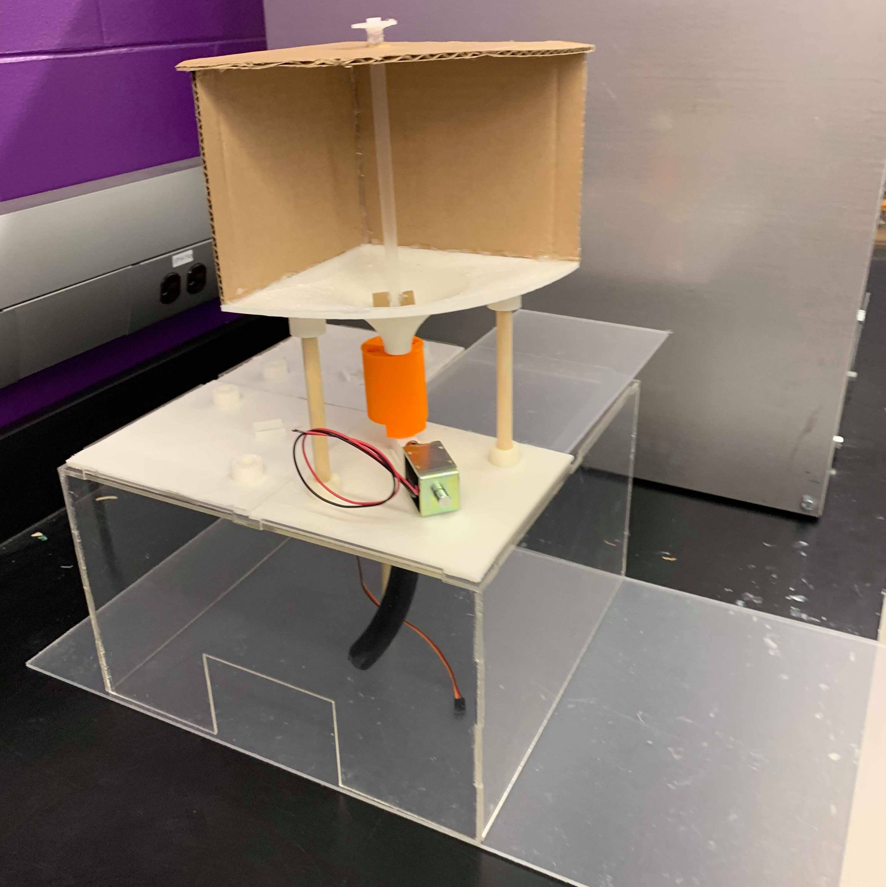
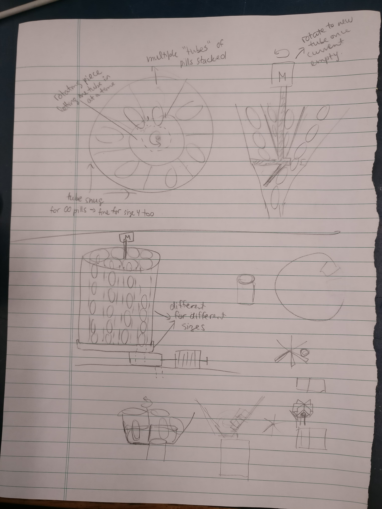
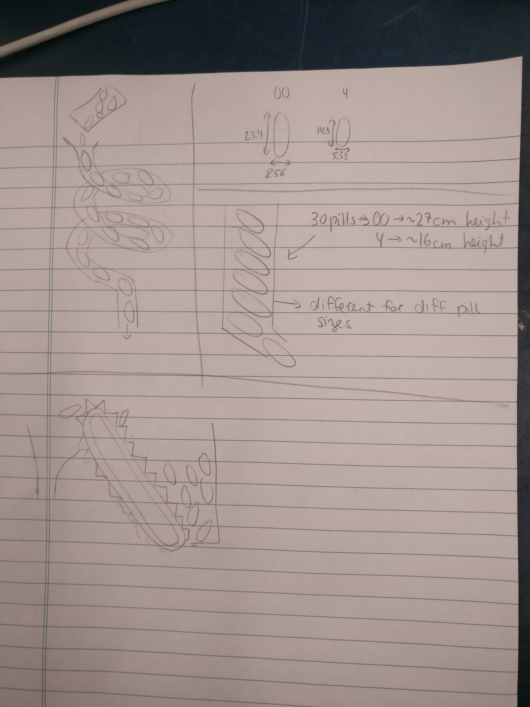
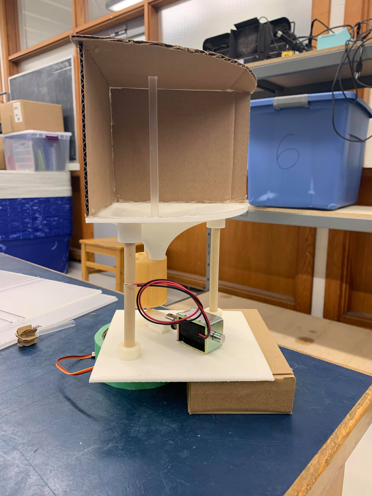
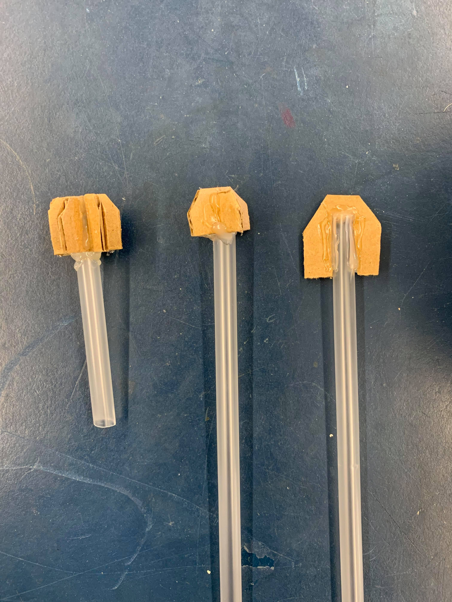

-
Welcome to the blog, follow CapsuleMate's progress with weekly updates!
-
Table of Contents
Week 1 Update: When Gravity Just Isn't Enough
Week 2 Update: RIP Raspberry PI & One Quadrant Assembly
Week 3 Update: The Power of Gears
Week 4 Update: Photoresistor + LED
-
Week 4 Update: Photoresistor + LED
This past week we tested the last electrical component required to get quadrant one of the dispenser up and running. This is the photoresistor and LED combo that verifies that a pill is actually dispensed in order to prevent false positives. In our initial design, we toyed around with several different sensors to verify the pill dispensed such a load sensor and an RGB colour sensor to verify based on weight or colour respectively. Ultimately, we chose a photoresistor and LED combo that would sit inside the final dispensing tube. Upon testing the system we realized that while the photoresistor worked correctly, the pill fell down through the tube too quickly for the photoresistor to recognize a change in light intensity. In the videos below you can see the pill fall through the tube however in the second video you can that the photoresistor barely recognizes a change in value
Video 1: The Photoresistor and LED setup inside the tube. Video 2: The photoresistor detecting the pillWe then brainstormed alternate solutions, one of which was to re-locate the photoresistor to the bottom of the tube so that the pill would be stationary; thus, giving the photoresistor enough time to detect it. When this didn’t work we rethought our strategy for the pill dispenser. The purpose of the photoresistor and the LED combo is to verify that a pill is actually dispensed by the solenoid and prevent false positives. Therefore, we can detect the pill anytime after it is dispensed not solely as it’s falling through the tube. For this reason, we decided to relocate the photosensor into the side of the pusher piece where the pill remains stationary for several seconds until it is dropped into the tube.
Video 3: A large change in light intensity detected by the photoresistorIn the video above, the photo resistor values increase by 200 when the pill is detected. With some more testing, we found that the photosensor seemed to output the greatest difference in values without the LED shining on it. The contrast between the ambient light and the presence of the pill seemed sufficient, but we will test this again on the final build and pick a solution that maximizes the change in light intensity. Either way, with this we managed to complete all the functions (mechanical and electrical) required to get one quadrant of the structure working!
Week 3 Update: The Power of Gears
Last week we left off with the struggle of finding non-continuous 360 servo motors to rotate the cylinder component. While it is possible to turn a regular servo motor into a continuous rotation one, there were no hacks to make the opposite true. We scoured the interwebs some more and disgruntedly accepted that we would have to replace servos for stepper motors. This was undesirable because stepper motors require separate boards to control them, which then need to be stacked on top of the Pi. We then had the ingenious idea of converting the servo motor’s 180 degrees range to 360 degrees using gears (2:1 gear ratio)
We quickly made a CAD model of the gears and after iterating to find the correct size we 3D printed them. With a little bit of sanding, some will power and Martin holding everything in place, we tested the prototype and found it successful! In the video below you can see that the cylinder is able to rotate from funnels 1 - 4 even though the servo motor only supports ~160 degrees of rotation.
Now that we extended the range of motion of the servo motors, we will update the code so that the funnels of the cylinder align to the storage component correctly. We will also modify the CAD for the base plate to accommodate for the gears.
This week, we also tested the pill detection strategy by assembling prototype 1 of the light sensor + photoresistor but we will talk about that more in next week’s blog post. Anyway, we are 75% of the way to automating a quadrant of the whole structure and are excited to see it working end-to-end!
Week 2 Update: RIP Raspberry PI & One Quadrant Assembly
This week the team went in with the goal of assembling a full quadrant of the full pill dispensing apparatus.
Right off the bat there was a slight hitch, namely that our Raspberry Pi had died. This was a problem since it controls the solenoid for dispensing, the stirring rods, the alignment cylinder and basically our entire apparatus. Nevertheless, this unexpected hump turned out to be a valuable lesson about static electricity and that anything with exposed electronics including the Raspberry Pi is vulnerable to it. We replaced the PI and reviewed ESD precautions by investing in an anti-static strap, and generally discharging static by touching a grounded metal object before touching the PI.
With the new PI in place, we were able to assemble a full quadrant of the structure and power it with electronics. We laser cut the base (which will house all the electrical components) out of acrylic sheets. Then, we mounted the dispensing structure above it to see a full quadrant in operation.
vAs a bonus, we connected the electronics available (servomotors to control the stirring rod and the solenoid to push out pills) to get a quasi-automated structure as seen in the video below. As anticipated, with the aid of the stirring stick the pills dislodge from the storage container, then the pusher piece and solenoid combo successfully isolate one pill to dispense.
Next steps
Assembling this quadrant gave the team an opportunity to observe nuances with the physical build that weren’t noticed in the CAD designs. As expected we discovered a few changes we need to make with the remaining parts before printing them:→ Reduce the size of the base plates to 14cm x 14 cm so they fit together better on top of the base
→ Design a more sturdy stirring rod
→ Support the motor so that it stays aligned in the centre of the storage compartment.
We also discovered that the servo motor we purchased only supported continuous 360 rotation, and cannot turn to a specified angle. Since our cylinder component needs to be turned a certain amount we ordered new motors.In this upcoming week, we will focus on the photosensor and LED combo to detect whether a pill has fallen, which should be the last step to produce a fully automated mechanism.
Week 1 Update: When Gravity Just Isn't Enough
Coming into 2019, we moved out of the design phase and started building the first iteration of the full mechanical structure. This includes the dispensing mechanism prototyped early last fall, the storage component, and the tube with the photosensor. To see earlier updates of the dispensing mechanism and some other CAD designs check out our gallery page.
To begin, we started by 3D printing the components and fitting them together. After printing out the bits and assembling one quadrant of the final structure we identified the first hurdle. The pills did not fall out of the storage component as expected. Instead, they jammed in the storage component, totally unreachable by the dispensing mechanism as seen in the video below.
Fluke solution: Frustrated with the problem, we knocked the storage component around a little bit and realized that with enough of a push the pills would dislodge. Then came the problem of how to automate this motion. After pondering for a few days we came up with several creative solutions to address the problem of the jammed pills (the viable ones are listed below):→ A slide or conveyer belt within the storage vault to keep the pills moving. The con to this solution is how to go about accomodating a conveyer with the existing design.
→ Another idea is to make the entire storage container vibrate. One concern with this idea is how much vibration is required to keep the pills moving. In addition, there is difficulty decoupling the storage component from the rest of the chassis.
After many rounds of brainstorming, we came to the easiest solution, a rotating arm in the centre of the storage component to prevent the pills from getting jammed. The benefit of this idea is that it is minimally invasive to our current design and was easy to test out. Immediately, we went about making a quick prototype as seen below.
The straw has an arm at the bottom that sweeps the bottom of the storage funnel and dislodges any stuck pills. Content with the first test we went about automating it by adding a motor to control the rotation.
Success, we will update our SolidWorks model to reflect these changes and continue to move forward!